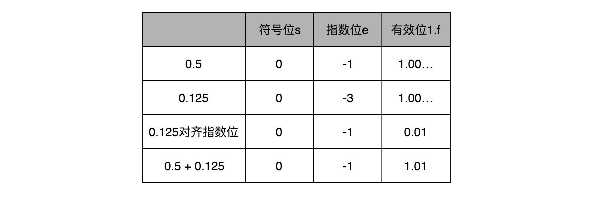

- 00 开篇词 为什么你需要学习计算机组成原理？.md
- 01 冯·诺依曼体系结构：计算机组成的金字塔.md
- 02 给你一张知识地图，计算机组成原理应该这么学.md
- 03 通过你的CPU主频，我们来谈谈“性能”究竟是什么？.md
- 04 穿越功耗墙，我们该从哪些方面提升“性能”？.md
- 05 计算机指令：让我们试试用纸带编程.md
- 06 指令跳转：原来if...else就是goto.md
- 07 函数调用：为什么会发生stack overflow？.md
- 08 ELF和静态链接：为什么程序无法同时在Linux和Windows下运行？.md
- 09 程序装载：“640K内存”真的不够用么？.md
- 10 动态链接：程序内部的“共享单车”.md
- 11 二进制编码：“手持两把锟斤拷，口中疾呼烫烫烫”？.md
- 12 理解电路：从电报机到门电路，我们如何做到“千里传信”？.md
- 13 加法器：如何像搭乐高一样搭电路（上）？.md
- 14 乘法器：如何像搭乐高一样搭电路（下）？.md
- 15 浮点数和定点数（上）：怎么用有限的Bit表示尽可能多的信息？.md
- 16 浮点数和定点数（下）：深入理解浮点数到底有什么用？.md
- 17 建立数据通路（上）：指令加运算=CPU.md
- 18 建立数据通路（中）：指令加运算=CPU.md
- 19 建立数据通路（下）：指令加运算=CPU.md
- 20 面向流水线的指令设计（上）：一心多用的现代CPU.md
- 21 面向流水线的指令设计（下）：奔腾4是怎么失败的？.md
- 22 冒险和预测（一）：hazard是“危”也是“机”.md
- 23 冒险和预测（二）：流水线里的接力赛.md
- 24 冒险和预测（三）：CPU里的“线程池”.md
- 25 冒险和预测（四）：今天下雨了，明天还会下雨么？.md
- 26 Superscalar和VLIW：如何让CPU的吞吐率超过1？.md
- 27 SIMD：如何加速矩阵乘法？.md
- 28 异常和中断：程序出错了怎么办？.md
- 29 CISC和RISC：为什么手机芯片都是ARM？.md
- 30 GPU（上）：为什么玩游戏需要使用GPU？.md
- 31 GPU（下）：为什么深度学习需要使用GPU？.md
- 32 FPGA、ASIC和TPU（上）：计算机体系结构的黄金时代.md
- 33 解读TPU：设计和拆解一块ASIC芯片.md
- 34 理解虚拟机：你在云上拿到的计算机是什么样的？.md
- 35 存储器层次结构全景：数据存储的大金字塔长什么样？.md
- 36 局部性原理：数据库性能跟不上，加个缓存就好了？.md
- 37 理解CPU Cache（上）：“4毫秒”究竟值多少钱？.md
- 38 高速缓存（下）：你确定你的数据更新了么？.md
- 39 MESI协议：如何让多核CPU的高速缓存保持一致？.md
- 40 理解内存（上）：虚拟内存和内存保护是什么？.md
- 41 理解内存（下）：解析TLB和内存保护.md
- 42 总线：计算机内部的高速公路.md
- 43 输入输出设备：我们并不是只能用灯泡显示“0”和“1”.md
- 44 理解IO_WAIT：IO性能到底是怎么回事儿？.md
- 45 机械硬盘：Google早期用过的“黑科技”.md
- 46 SSD硬盘（上）：如何完成性能优化的KPI？.md
- 47 SSD硬盘（下）：如何完成性能优化的KPI？.md
- 48 DMA：为什么Kafka这么快？.md
- 49 数据完整性（上）：硬件坏了怎么办？.md
- 50 数据完整性（下）：如何还原犯罪现场？.md
- 51 分布式计算：如果所有人的大脑都联网会怎样？.md
- 52 设计大型DMP系统（上）：MongoDB并不是什么灵丹妙药.md
- 53 设计大型DMP系统（下）：SSD拯救了所有的DBA.md
- 54 理解Disruptor（上）：带你体会CPU高速缓存的风驰电掣.md
- 55 理解Disruptor（下）：不需要换挡和踩刹车的CPU，有多快？.md
- 结束语 知也无涯，愿你也享受发现的乐趣.md
16 浮点数和定点数（下）：深入理解浮点数到底有什么用？
上一讲，我们讲了用“浮点数”这样的数据形式，来表示一个不能确定大小的数据范围。浮点数可以大到 3.40×10383.40×1038，也可以小到 1.17×10−381.17×10−38 这样的数值。同时，我们也发现，其实我们平时写的 0.1、0.2 并不是精确的数值，只是一个近似值。只有 0.5 这样，可以表示成 2−12−1 这种形式的，才是一个精确的浮点数。
你是不是感到很疑惑，浮点数的近似值究竟是怎么算出来的？浮点数的加法计算又是怎么回事儿？在实践应用中，我们怎么才用好浮点数呢？这一节，我们就一起来看这几个问题。
浮点数的二进制转化
我们首先来看，十进制的浮点数怎么表示成二进制。
我们输入一个任意的十进制浮点数，背后都会对应一个二进制表示。比方说，我们输入了一个十进制浮点数 9.1。那么按照之前的讲解，在二进制里面，我们应该把它变成一个“符号位 s+ 指数位 e+ 有效位数 f”的组合。第一步，我们要做的，就是把这个数变成二进制。
首先，我们把这个数的整数部分，变成一个二进制。这个我们前面讲二进制的时候已经讲过了。这里的 9，换算之后就是 1001。
接着，我们把对应的小数部分也换算成二进制。小数怎么换成二进制呢？我们先来定义一下，小数的二进制表示是怎么回事。我们拿 0.1001 这样一个二进制小数来举例说明。和上面的整数相反，我们把小数点后的每一位，都表示对应的 2 的 -N 次方。那么 0.1001，转化成十进制就是：
1×2−1+0×2−2+0×2−3+1×2−1+0×2−2+0×2−3+ 1×2−4=0.56251×2−4=0.5625
和整数的二进制表示采用“除以 2，然后看余数”的方式相比，小数部分转换成二进制是用一个相似的反方向操作，就是乘以 2，然后看看是否超过 1。如果超过 1，我们就记下 1，并把结果减去 1，进一步循环操作。在这里，我们就会看到，0.1 其实变成了一个无限循环的二进制小数，0.000110011。这里的“0011”会无限循环下去。

然后，我们把整数部分和小数部分拼接在一起，9.1 这个十进制数就变成了 1001.000110011…这样一个二进制表示。
上一讲我们讲过，浮点数其实是用二进制的科学计数法来表示的，所以我们可以把小数点左移三位，这个数就变成了：
1.00101.0010001100110011…×230011…×23
那这个二进制的科学计数法表示，我们就可以对应到了浮点数的格式里了。这里的符号位 s = 0，对应的有效位 f=001000110011…。因为 f 最长只有 23 位，那这里“0011”无限循环，最多到 23 位就截止了。于是，f=00100011001100110011 001。最后的一个“0011”循环中的最后一个“1”会被截断掉。对应的指数为 e，代表的应该是 3。因为指数位有正又有负，所以指数位在 127 之前代表负数，之后代表正数，那 3 其实对应的是加上 127 的偏移量 130，转化成二进制，就是 130，对应的就是指数位的二进制，表示出来就是 10000010。
然后，我们把“s+e+f”拼在一起，就可以得到浮点数 9.1 的二进制表示了。最终得到的二进制表示就变成了：
010000010 0010 0011001100110011 001
如果我们再把这个浮点数表示换算成十进制， 实际准确的值是 9.09999942779541015625。相信你现在应该不会感觉奇怪了。
我在这里放一个链接，这里提供了直接交互式地设置符号位、指数位和有效位数的操作。你可以直观地看到，32 位浮点数每一个 bit 的变化，对应的有效位数、指数会变成什么样子以及最后的十进制的计算结果是怎样的。
这个也解释了为什么，在上一讲一开始，0.3+0.6=0.899999。因为 0.3 转化成浮点数之后，和这里的 9.1 一样，并不是精确的 0.3 了，0.6 和 0.9 也是一样的，最后的计算会出现精度问题。
浮点数的加法和精度损失
搞清楚了怎么把一个十进制的数值，转化成 IEEE-754 标准下的浮点数表示，我们现在来看一看浮点数的加法是怎么进行的。其实原理也很简单，你记住六个字就行了，那就是先对齐、再计算。
两个浮点数的指数位可能是不一样的，所以我们要把两个的指数位，变成一样的，然后只去计算有效位的加法就好了。
比如 0.5，表示成浮点数，对应的指数位是 -1，有效位是 00…（后面全是 0，记住 f 前默认有一个 1）。0.125 表示成浮点数，对应的指数位是 -3，有效位也还是 00…（后面全是 0，记住 f 前默认有一个 1）。
那我们在计算 0.5+0.125 的浮点数运算的时候，首先要把两个的指数位对齐，也就是把指数位都统一成两个其中较大的 -1。对应的有效位 1.00…也要对应右移两位，因为 f 前面有一个默认的 1，所以就会变成 0.01。然后我们计算两者相加的有效位 1.f，就变成了有效位 1.01，而指数位是 -1，这样就得到了我们想要的加法后的结果。
实现这样一个加法，也只需要位移。和整数加法类似的半加器和全加器的方法就能够实现，在电路层面，也并没有引入太多新的复杂性。

同样的，你可以用刚才那个链接来试试看，我们这个加法计算的浮点数的结果是不是正确。
回到浮点数的加法过程，你会发现，其中指数位较小的数，需要在有效位进行右移，在右移的过程中，最右侧的有效位就被丢弃掉了。这会导致对应的指数位较小的数，在加法发生之前，就丢失精度。两个相加数的指数位差的越大，位移的位数越大，可能丢失的精度也就越大。当然，也有可能你的运气非常好，右移丢失的有效位都是 0。这种情况下，对应的加法虽然丢失了需要加的数字的精度，但是因为对应的值都是 0，实际的加法的数值结果不会有精度损失。
32 位浮点数的有效位长度一共只有 23 位，如果两个数的指数位差出 23 位，较小的数右移 24 位之后，所有的有效位就都丢失了。这也就意味着，虽然浮点数可以表示上到 3.40×10383.40×1038，下到 1.17×10−381.17×10−38 这样的数值范围。但是在实际计算的时候，只要两个数，差出 224224，也就是差不多 1600 万倍，那这两个数相加之后，结果完全不会变化。
你可以试一下，我下面用一个简单的 Java 程序，让一个值为 2000 万的 32 位浮点数和 1 相加，你会发现，+1 这个过程因为精度损失，被“完全抛弃”了。
public class FloatPrecision {
public static void main(String[] args) {
float a = 20000000.0f;
float b = 1.0f;
float c = a + b;
System.out.println("c is " + c);
float d = c - a;
System.out.println("d is " + d);
}
}
对应的输出结果就是：
c is 2.0E7
d is 0.0
Kahan Summation 算法
那么，我们有没有什么办法来解决这个精度丢失问题呢？虽然我们在计算浮点数的时候，常常可以容忍一定的精度损失，但是像上面那样，如果我们连续加 2000 万个 1，2000 万的数值都会被精度损失丢掉了，就会影响我们的计算结果。
一个常见的应用场景是，在一些“积少成多”的计算过程中，比如在机器学习中，我们经常要计算海量样本计算出来的梯度或者 loss，于是会出现几亿个浮点数的相加。每个浮点数可能都差不多大，但是随着累积值的越来越大，就会出现“大数吃小数”的情况。
我们可以做一个简单的实验，用一个循环相加 2000 万个 1.0f，最终的结果会是 1600 万左右，而不是 2000 万。这是因为，加到 1600 万之后的加法因为精度丢失都没有了。这个代码比起上面的使用 2000 万来加 1.0 更具有现实意义。
public class FloatPrecision {
public static void main(String[] args) {
float sum = 0.0f;
for (int i = 0; i < 20000000; i++) {
float x = 1.0f;
sum += x;
}
System.out.println("sum is " + sum);
}
}
对应的输出结果是：
sum is 1.6777216E7
复制代码
面对这个问题，聪明的计算机科学家们也想出了具体的解决办法。他们发明了一种叫作Kahan Summation的算法来解决这个问题。算法的对应代码我也放在文稿中了。从中你可以看到，同样是 2000 万个 1.0f 相加，用这种算法我们得到了准确的 2000 万的结果。
public class KahanSummation {
public static void main(String[] args) {
float sum = 0.0f;
float c = 0.0f;
for (int i = 0; i < 20000000; i++) {
float x = 1.0f;
float y = x - c;
float t = sum + y;
c = (t-sum)-y;
sum = t;
}
System.out.println("sum is " + sum);
}
}
对应的输出结果就是：
sum is 2.0E7
复制代码
其实这个算法的原理其实并不复杂，就是在每次的计算过程中，都用一次减法，把当前加法计算中损失的精度记录下来，然后在后面的循环中，把这个精度损失放在要加的小数上，再做一次运算。
如果你对这个背后的数学原理特别感兴趣，可以去看一看Wikipedia 链接里面对应的数学证明，也可以生成一些数据试一试这个算法。这个方法在实际的数值计算中也是常用的，也是大量数据累加中，解决浮点数精度带来的“大数吃小数”问题的必备方案。
总结延伸
到这里，我们已经讲完了浮点数的表示、加法计算以及可能会遇到的精度损失问题。可以看到，虽然浮点数能够表示的数据范围变大了很多，但是在实际应用的时候，由于存在精度损失，会导致加法的结果和我们的预期不同，乃至于完全没有加上的情况。
所以，一般情况下，在实践应用中，对于需要精确数值的，比如银行存款、电商交易，我们都会使用定点数或者整数类型。
比方说，你一定在 MySQL 里用过 decimal(12,2)，来表示订单金额。如果我们的银行存款用 32 位浮点数表示，就会出现，马云的账户里有 2 千万，我的账户里只剩 1 块钱。结果银行一汇总总金额，那 1 块钱在账上就“不翼而飞”了。
而浮点数呢，则更适合我们不需要有一个非常精确的计算结果的情况。因为在真实的物理世界里，很多数值本来就不是精确的，我们只需要有限范围内的精度就好了。比如，从我家到办公室的距离，就不存在一个 100% 精确的值。我们可以精确到公里、米，甚至厘米，但是既没有必要、也没有可能去精确到微米乃至纳米。
对于浮点数加法中可能存在的精度损失，特别是大量加法运算中累积产生的巨大精度损失，我们可以用 Kahan Summation 这样的软件层面的算法来解决。
好了，到了这里，我已经把浮点数讲透了。希望你能从数据的表示、加法的实现，乃至实践应用、数值算法层面能够体会到，搞清楚一个计算机问题的基本原理，其实能够帮助你理解它的实践应用，乃至找到在特定问题下的可行解决方案。接下来，我们要深入到 CPU 的构造，去理解计算机组成原理。
推荐阅读
浮点数的加法我们讲完了。想要更深入地了解乘法乃至除法，可以参看《计算机组成与设计 硬件 / 软件接口》的 3.5.2 和 3.5.3 小节。